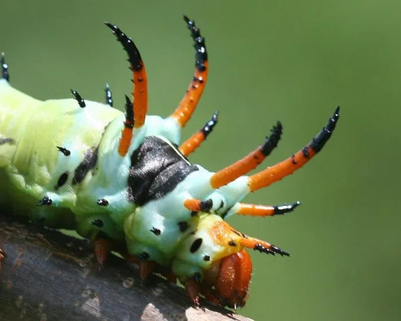

JUDETOPIA
JUDETOPIA

featured this week
Hickory Horned Devil
Citheronia regalis
The biggest caterpillar in North America, the Hickory Horned Devil can grow as long as your hand, with a crown of curved orange-and-black horns that look ready for battle. It’s all bluff: the horns are harmless and it doesn’t sting. It munches on hickory, walnut, and sweetgum leaves through late summer, then burrows into the soil to become the Regal Moth, a huge orange-and-gray beauty that lives only about a week.